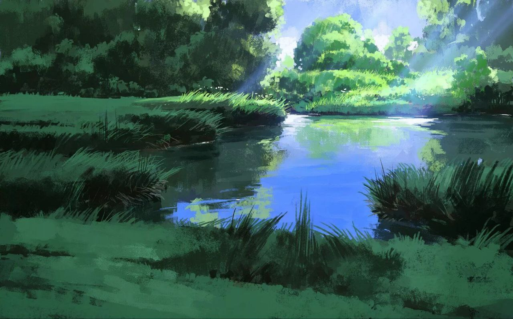
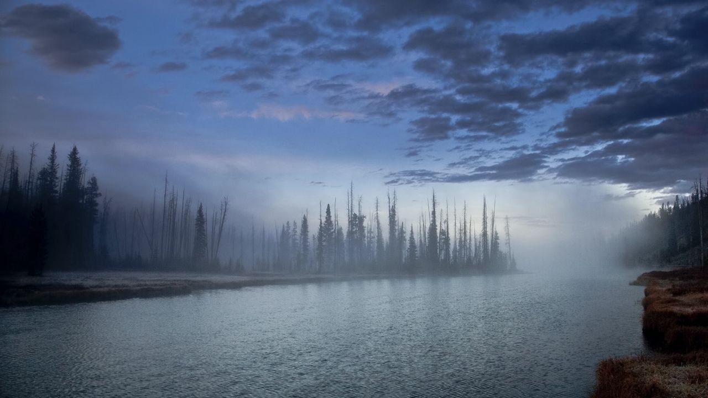
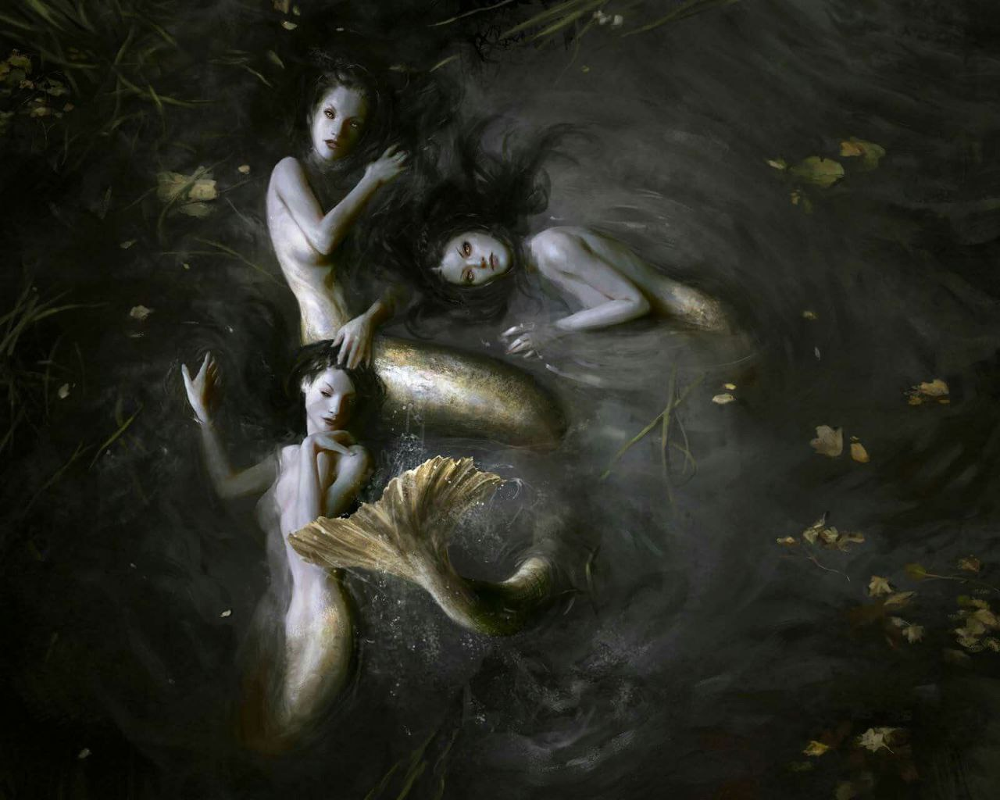

Северный берег тихого озера является самым безопасным среди остальных берегов. Здесь озеро полностью оправдывает своё название, тихое без сильных течений и воронок. Других берегов отсюда совсем не видно, озеро довольно крупное и таит в себе много тайн. Этот берег опасен лишь тем, что тут в некоторых местах обитают русалки, рыболюды и другая живность. Северная часть славится своей тишиной, обилием рыбы разных видов и частыми туманами над водой. Ввиду этих туманов долго никто не мог определить точные размеры озера, и в самом деле будь оно солёным, то смело звалось бы морем.

Северный берег имеет как песчаные пляжи так и заросшие рогозом и камышом места скрытые клочками леса. Западней край озера упирается в практически отвесной обрыв, с другой же стороны уходит в низину где с самой его восточной части продолжается рекой на север и юг, то место зовётся "Перепутье" и к северному берегу, как и к другим, не относится, крупных деревень и городов у озера нет, совсем недалеко находится столица Идрий, само же озеро находится к югу от неё.

Живописные туманные места пользуются популярностью у рыбаков.

Говорят, что озеро "Тихое" это место где грань между астралом и материальны миром слабее всего в средиземье, поэтому здесь часто можно встретить видения, слышать, что не слышат другие и испытывать головокружения. Жители близлежайших земель поговаривают о том, что существует секта которая общается с мёртвыми и с духами у озера, устраивает шабаши в ближайших дебрях и у берегов.
На дне озера находятся странные руины неизвестного народа, точная глубина его до сих пор не известна.